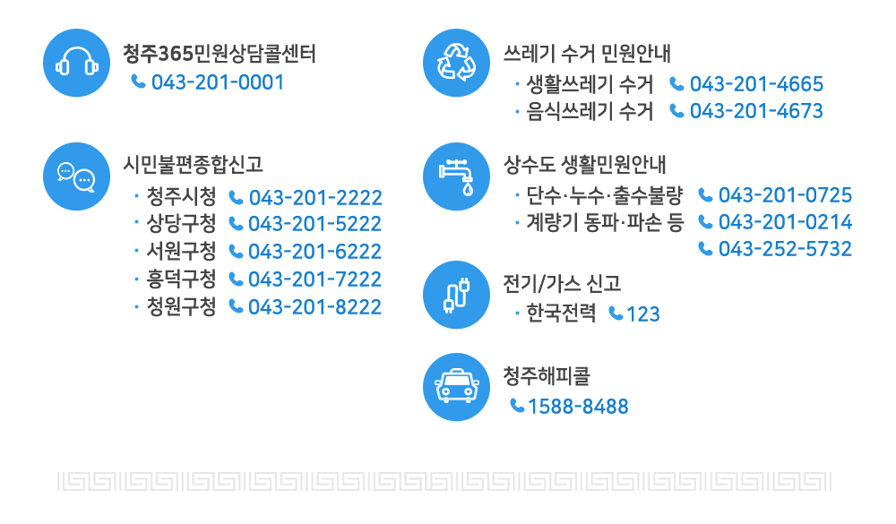
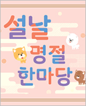
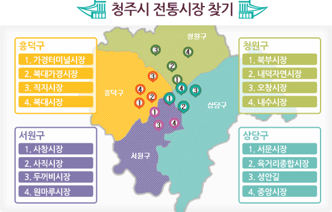

탭메뉴
2018년 설 연휴기간 주요 생활민원
주요 민원번호 안내

청주365민원콜센터
- 대표번호 : 043-201-0001
- 운영시간 : 365일(평일 8:00 ~ 20:00 / 토·일·공휴일 9:00 ~ 18:00)
- 안내내용 : 교통, 환경, 시정일반, 행정지원, 농업정책, 복지, 세무 등 생활불편민원 접수
시민불편 종합신고
- 운영기간 : ‘18. 2. 15(목) ~ ’18. 2. 18(일), 4일간
- 운영내용 : 연휴기간 중 각종 생활민원 접수, 사건사고, 가축질병 의심신고 등
생활(음식물) 쓰레기 수거안내
- 운영기간 : 2018. 02. 14. ~ 02. 19. (6일간)
- 수거대상 : 생활쓰레기(일반쓰레기, 재활용 등), 음식물쓰레기
- 안내번호(043)
일자별 수거 일정
| 구 분 | 2.14 | 2.15 | 2.16 | 2.17 | 2.18 | 2.19 |
|---|---|---|---|---|---|---|
| 생 활 | 수거 | 수거 | 미수거 | 수거 | 미수거 | 수거 |
| 음식물 | 수거 | 수거 | 미수거 | 수거 | 미수거 | 수거 |
공원묘지 및 장례식장 안내
| 시설명 | 연락처 | 소재지 |
|---|---|---|
| 목련공원 | 043-270-8574 | 상당구 목련로 731(월오동) |
| 목련공원 화장장 | 043-270-8578~9 | 상당구 목련로 731(월오동) ※ 설날(2.16.) 휴관 |
| 매화공원 | 043-270-7320 | 상당구 가덕면 상장인차로 460 |
| 장미공원 | 043-270-7330 | 청원구 오창읍 양청3길 88 |
| 청주시장례식장 | 043-291-4444 | 상당구 목련로 731(월오동) |
2018년 설 연휴기간 주요 교통정보
교통종합상황실
- 운영기간 : ‘18. 2. 15(목) ~ ’18. 2. 18(일), 09:00 ~ 18:00
- 전화번호 : 043-201-2811~3, 043-201-2865~6
청주해피콜 운행안내
- 운행기간 : ‘18. 2. 15(목) ~ ’18. 2. 18(일), 4일간
- 운행내용 : 26대 / 06:00 ~ 익일 01:00까지 운행
- 예약 및 문의 : 1588-8488
심야운행버스정보(터미널-오송역간)
- 노선명 : 747
- 경 로 : KTX오송역-충청대학-시외버스터미널
| 출발지 | 시각 | 도착지 | 시각 |
|---|---|---|---|
| 시외버스터미널 | 23:30 | 오송역 | 23:50 |
| 00:10 | 00:35 | ||
| 오송역 | 22:30 | 시외버스터미널 | 22:50 |
| 23:10 | 23:30 | ||
| 23:50 | 0:10 | ||
| 00:35 | 00:55 |
고속/시외버스 증회 운행 (청주발 기준)
- 운행기간 : ‘18. 2. 14(수) ~ ’18. 2. 18(일), 5일간
고속버스 주요노선 증회 운행
- 주요노선 증회 운행계획 : 6노선 175회 ⇒ 215회 (증 40회)
| 노 선 | 현 행 | 증 회 | 계 | 업체명 |
|---|---|---|---|---|
| 합 계 | 175 | 40 | 215 | |
| 청 주 ~ 서울(강남) | 111 | 19 | 130 | 속리산, 중앙 |
| 청 주 ~ 동서울 | 25 | 4 | 29 | 속리산, 중앙 |
| 청 주 ~ 상 봉 | 2 | 3 | 5 | 중앙 |
| 청 주 ~ 부 산 | 9 | 5 | 14 | 속리산, 한일 |
| 청 주 ~ 대 구 | 12 | 4 | 16 | 속리산, 삼화 |
| 청 주 ~ 광 주 | 16 | 5 | 21 | 속리산, 금호 |
※ 수송수요에 따라 탄력적 조정 운영
시외버스 주요노선 증회 운행
- 주요노선 증회 운행계획 : 7노선 129회 ⇒ 206회 (증 77회)
| 노 선 | 현 행 | 증 회 | 계 | 경유지 |
|---|---|---|---|---|
| 계 | 129 | 77 | 206 | |
| 오창 ~ 서울(남부) | 13 | 13 | 26 | |
| 북청주 ~ 서울(남부) | 19 | 10 | 29 | |
| 북청주 ~ 서울(센트럴) | 12 | 12 | 24 | |
| 청주 ~ 서울(남부) | 55 | 20 | 75 | |
| 청주 ~ 서울(센트럴) | 15 | 15 | 30 | |
| 속리산 ~ 서울(센트럴) | 4 | 4 | 8 | 보은, 청주 |
| 청주 ~ 전주 | 11 | 3 | 14 |
※ 수송수요에 따라 탄력적 조정 운영
불법 주․정차 특별 지도단속 소통관리
- 운영기간 : ‘18. 2. 15(목) ~ ’18. 2. 18(일), 4일간
- 단 속 반 : 구청 교통지도팀
- 단속방법 : 주요 간선도로, 대형쇼핑몰 및 터미널 등 혼잡지역 지도단속
- 단속문의 : 상당구청 043-201-5401, 서원구청 043-201-6401, 흥덕구청 043-201-7401, 청원구청 043-201-8401
공원묘지 경유 안내
- 연휴기간 : ‘18. 2. 15(목) ~ ’18. 2. 18(일), 4일간
공원묘지 경유 운행 안내 공원묘지명 노선번호 기 점 노선경로 종 점 운행횟수 목련공원 921-1 청주예술대 문화산업단지-상당공원-도청-육거리-월오동 목련공원 15회 가덕 212 오동육교 성모병원-시청-영운동주민센터-남일면사무소 가덕삼항리 9회 장미공원 713 분평종점 육거리-청주대-성모병원 양청리 42회 717 동부종점 금천동-사창사거리-터미널-청주역-옥산면 오창과학단지 21회
2018년 설 연휴기간 주요 문화행사
문화행사·전시·공연
청주시립미술관
- 운영기간 : ‘18. 2. 15(목) ~ ’18. 2. 18(일), ※설날당일(2.16.)은 휴관
- 운영안내 : 043-201-0911
- 장 소 : 청주시 상당구 대청호반로 721 청주시립대청호미술관
- 운영내역
청주시립대청호미술관 안내 일시 장소 공연·전시·체험 내용 관람비 2.15.~ 2.18.
※ 2.16. 휴관대청호 미술관 『내가 바로 명탐정』 기획전‘끝없는 밤’ 연계프로그램
(퀴즈풀이)문의문화재단 입장객에 한하여 무료 『추리소설 독후감 대회』 기획전‘끝없는 밤’ 연계프로그램
(가정스릴러 감상문쓰기)무료 『조각공원 한바퀴』 야외조각공원 지도완성하기
청주고인쇄박물관
- 운영기간 : ‘18. 2. 15(목) ~ ’18. 2. 18(일), 3일간 / ※ 2. 16.(금) 설날 당일 휴관
- 운영안내 : 043-201-4266, 043-260-2503 / 09:00 ~ 18:00
- 관람 및 체험 안내
청주시립대청호미술관 안내 관람·체험 일시 장소 내용 관람비 비고 박물관 관람 09:00~ 18:00 청주고인쇄물관 전시관 관람 무료 설날 당일 휴관 체험 09:00~ 18:00 근현대 인쇄전시관 인쇄 체험 무료 금속활자 전수교육관 옛책, 북아트,죽간만들기 체험 유료
국립청주박물관

- 기 간 : 2. 15. (목) ~ 2. 18. (일) / ※ 2. 16.(금) 설날 당일 휴관
- 장 소 : 명관 앞뜰, 로비, 대강당, 문화사랑채 소강당, 어린이박물관 앞뜰
- 세부내용 : 전통놀이 한마당, 가족영화상영, 전통 탈 놀이극, 전통문화체험(2종)
- 전통탈놀이극 : 2. 15. (목) 14:00 / 청명관 대강당
- 전통문화체험 : 맛있는 인절미 만들기와 떡메치기 / 2. 17. (토) ~ 18. (일) 13:00 ~ 16:00
전통문양 비누 만들기 / 2. 17. (토) ~ 18. (일) 10:00 ~ 17:00 - 특별전 『국립청주박물관, 동행 30년』 : 2018. 2. 25. (일) 까지
- 2018년 박물관전통문화교실 수강생 작품전 : 2018. 3. 4. (일) 까지
예술의전당
뮤지컬콘서트
- 일 시 : 18. 2. 18. 16시
- 장 소 : 대공연장
- 내 용 : 국내 최정상 뮤지컬 배우들과 함께하는 콘서트(홍지민, 김소현 출연)
- 관람비 : R석 99,000, S석 77,000, A석 66,000
- 공연문의 : ㈜피앤씨플랜, 043-211-8626
어린이회관, 동물원
- 운영기간 : ‘18. 2. 15(목) ~ ’18. 2. 18(일), 3일간
※ ‘18. 2. 16.(금) 휴관 - 운영안내 : 043-201-4863, 청주랜드관리사업소
- 운영내용 : 기후변화체험, 신재생에너지체험, 청주의 과거와 미래, 환상여행,
놀이동산, 동물관람(조류제외)
스케이트장ㆍ썰매장
- 운영기간 : ‘18. 2. 15(목) ~ ’18. 2. 18(일), 4일간
- 장 소 : 청주시 서원구 청주야구장 뒤편 실외스케이트장.썰매장
- 운영시간 : 오전 10시 ~ 오후 9:30
※ 2.16(설날) 오후1시부터 운영, 강우, 폭설, 미세먼지농도 심각시 (조기휴장) 탄력적운영 - 이용금액 : 2시간 – 2,000원( 스케이트.썰매 구분없이)
- 주차안내 : 실외스케이트장 주변, 예술의전당 주차장, 야구장 주변
- 운영안내 : 043-260-4761
기타문의
| 관광지 | 연락처 | 비고 |
|---|---|---|
| 문의문화재 단지 | 043-201-0915 | 설 당일만 휴무 |
| 손병희선생 유허지 | 043-201-0920 | |
| 단재신채호 기념관 | 043-201-0931 | |
| 청주백제유물전시관 | 043-263-0107 |
2018년 설 연휴기간 전통시장 안내
전통시장 주차 안내

| 시 장 명 | 주소/구간 | 주차면수 | 운영시간/기간 |
|---|---|---|---|
| 미원시장 | 청주시 상당구 미원면 미원시내2길 미원파출소 ~ 미원사거리 |
도로양측 | 2.5일-2.17일 2시간 |
| 육거리시장 | 상당구 석교동 60-4(1주차장) | 41 | 09:00~18:00 |
| 상당구 석교동 125-88(주차타워) | 151 | 09:00~18:00 | |
| 청주시 상당구 청남로2197번길 청남교 ~ 탑웨딩홀 |
도로양측 | 2.5일-2.17일 2시간 |
|
| 서문시장 | 상당구 서문동 166-60 | 30 | 무료개방 |
| 성안길상점가 | 상당구 서문동 100-1 | 121 | 10:00~21:30 |
| 사창 | 서원구 사창동 290-9 | 46 | 무료개방 |
| 사직 | 서원구 사직동 558-38 | 25 | 09:00~18:00 |
| 원마루시장 | 청주시 서원구 원마루로 14번길 2 용평교사거리~방서교삼거리 |
도로양측 | 09:00~18:00 |
| 두꺼비시장 | 청주시 서원구 수곡로58번길 한마음약국 ~ 한마음1차(아) |
도로양측 | 09:00~18:00 |
| 복대가경 | 청주시 흥덕구 복대동 1102 | 31 | 09:00~18:00 |
| 청주시 흥덕구 풍산로 117 유니온베이 ~ 코코다 |
도로편측 | 2.5일-2.17일 2시간 |
|
| 농산물시장 | 청주시 흥덕구 백봉로 254 한우식당 ~ 부흥유통 |
도로편측 | 2.5일-2.17일 2시간 |
| 직지시장 | 흥덕구 봉명동 472-12 | 33 | 무료개방 |
| 가경터미널 | 흥덕구 가경동 1286 | 52 | 09:00~18:00 |
| 청주시 흥덕구 풍년로160번길 | 도로편측 | 2.5일-2.17일 | |
| 백두산원예 ~ 흥덕한의원 | 2시간 | ||
| 내수시장 | 청원구 내수읍 마산리 36-11 | 77 | 무료개방 |
| 청주시 청원구 내수읍 마산3길 주공(아)입구 ~ 내부소방파출소 |
도로양측 | ||
| 북부시장 | 청원구 우암동 347-7(2주차장) | 23 | 09:00~17:30 |
| 청원구 우암동 344-10(1주차장) | 11 | 09:00~17:30 | |
| 청주시 청원구 우암동 345-2 피보사랑약국 ~ 국민상조 |
도로편측 | 2.5일-2.17일 2시간 |
2018년 설 연휴기간 당직 약국/병원 안내
운영 목록
구청별 당직 약국
구청별 당직 의료기관
당직 치과의원
| 명칭 | 소재지 | 전화번호 (043) |
진 료 계 획 | |||
|---|---|---|---|---|---|---|
| 2.15(목) | 2.16(금) | 2.17(토) | 2.18(일) | |||
| 유승한치과의원 | 청주시 상당구 남사로 137, 3층 (남문로2가,유승한치과의원) |
221-2875 | 09:00-13:00 | - | - | - |
| 1개소 | ||||||
당직 한의원
| 명칭 | 소재지 | 전화번호 (043) |
진 료 계 획 | |||
|---|---|---|---|---|---|---|
| 2.15(목) | 2.16(금) | 2.17(토) | 2.18(일) | |||
| 한국경희한의원 | 청주시 상당구 단재로 119 | 255-8275 | 09:00~13:00 | 12:00~17:00 | 09:00~17:00 | 09:00~17:00 |
| 나비솔한방병원 | 청주시 서원구 산남로 56 에버프라자 3~5층 | 286-7700 | 10:00~14:00 | 10:00~14:00 | 10:00~14:00 | 10:00~14:00 |
| 정경용한의원 | 청주시 흥덕구 진재로 50 | 234-4055 | 09:00~13:00 | - | - | 09:00~13:00 |
| 혜원한의원 | 청주시 흥덕구 복대로 151 덕일아파트상가 사동 202호 | 234-2722 | - | - | - | 09:30~15:00 |
| 나비솔한의원 | 청주시 흥덕구 풍산로 30 삼화빌딩 2층 | 232-3100 | - | - | 09:00~17:00 | 09:00~17:00 |
| 4개소 | ||||||